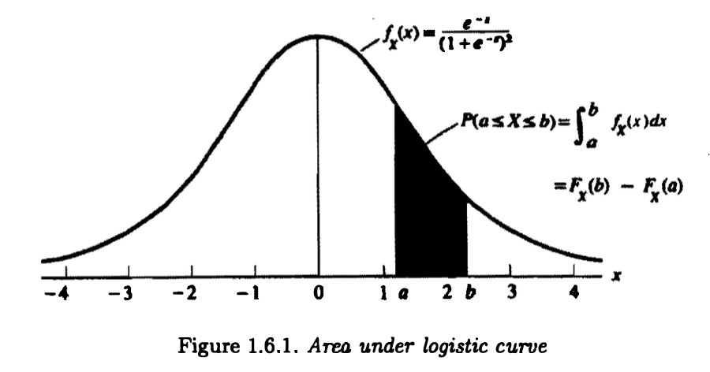

[统计推断]第一章·概率论
1 概率论基础
1.1 公理化基础
\(\sigma\) algebra / Borel field: 若 \(S\) 的一族子集 \(\mathcal B\) 满足以下三个性质：
- \(\varnothing\in\mathcal B\)
- 若 \(A\in\mathcal B\)，则 \(A^C\in\mathcal B\)
- 若 \(A_1,A_2,\ldots\in\mathcal B\)，则 \(\cup_{i=1}^\infty A_i\in\mathcal B\)
则称 \(\mathcal B\) 为一个 \(\sigma\) 代数或一个 Borel 域。
\(\{\varnothing,S\}\) 称为平凡的 \(\sigma\) 代数。
概率公理（Kolmogorov 公理）：已知样本空间 \(S\) 和 \(\sigma\) 代数 \(\mathcal B\)，若定义在 \(\mathcal B\) 上的函数 \(P\) 满足下列条件：
- 【非负性】对任意 \(A\in\mathcal B\)，\(P(A)\geq0\)
- 【归一性】\(P(S)=1\)
- 【可数可加性】若 \(A_1,A_2,\ldots\in\mathcal B\) 且两两不交，则 \(P(\cup_{i=1}^\infty A_i)=\sum_{i=1}^\infty P(A_i)\)
一些学者认为可数可加性并不显然，应该换成有限可加性。
1.2 概率演算
定理： \[ \begin{align} &P(B\cap A^C)=P(B)-P(A\cap B)\\ &P(A\cup B)=P(A)+P(B)-P(A\cap B) \end{align} \]
Bonferroni 不等式： \[ P(A\cap B)\geq P(A)+P(B)-1 \] 推广： \[ P\left(\bigcap_{i=1}^n A_i\right)\geq\sum_{i=1}^n P(A_i)-(n-1) \] Boole 不等式： \[ P\left(\bigcup_{i=1}^\infty A_i\right)\leq \sum_{i=1}^\infty P(A_i) \]
1.3 计数
从 \(n\) 个对象中选 \(r\) 个的方式：
| 无放回 | 有放回 | |
|---|---|---|
| 有序 | \[\frac{n!}{(n-r)!}\] | \[n^r\] |
| 无序 | \[\binom{n}{r}\] | \[\binom{n+r-1}{r}\] |
有序或无放回的情形都比较容易，难一点的是无序且有放回的情形。可以把 \(n\) 个对象看作 \(n\) 个箱子，然后把 \(r\) 个无差别的小球放到这些箱子中。这等价于在 \(r\) 个小球之间插入 \(n-1\) 个隔板，又等价于在 \(n+r-1\) 个对象中，挑 \(r\) 个当作小球，剩下 \(n-1\) 个当作隔板。因此答案是 \(\binom{n+r-1}{r}\).
2 条件概率与独立性
条件概率： \[ P(A\mid B)=\frac{P(A\cap B)}{P(B)} \]
Bayes 公式： \[ P(A_i\mid B)=\frac{P(B\mid A_i)P(A_i)}{\sum_{j}P(B\mid A_j)P(A_j)} \] 独立：称事件 \(A,B\) 统计独立，若： \[ P(A\cap B)=P(A)P(B) \] 称一列事件 \(A_1,\ldots,A_n\) 相互独立，若对任意 \(A_{i_1},\ldots,A_{i_k}\)，都有； \[ P\left(\bigcap_{j=1}^k A_{i_j}\right)=\prod_{j=1}^kP(A_{i_j}) \]
3 随机变量
3.1 累积分布函数（cdf）
\[ F_X(x)=P_X(X\leq x) \]
满足性质：
- \(\lim\limits_{x\to-\infty} F(x)=0,\,\lim\limits_{x\to+\infty}F(x)=1\)
- \(F(x)\) 是 \(x\) 的单调递增函数
- \(F(x)\) 右连续，即 \(\lim\limits_{x\to x_0^+}F(x)=F(x_0)\)
同分布：随机变量 \(X\) 和 \(Y\) 同分布，当且仅当 \(\forall x,\,F_X(x)=F_Y(y)\).
3.2 概率密度函数（pdf）和概率质量函数（pmf）
对于某离散随机变量 \(X\)，其概率质量函数（pmf）为： \[ f_X(x)=P_X(X=x) \] 对于某连续随机变量 \(X\)，其概率密度函数（pdf）为满足下式的函数： \[ F_X(x)=\int_{-\infty}^x f_X(x)\mathrm dx \] 由于 \(F_X(x)\) 可能连续而不可导，因此上式并不总是成立。事实上确实存在这样的连续随机变量，对任意 \(f_X(x)\) 都不满足上式，但这不在本书涉及范围内。在更深入的教材中，称满足上式的随机变量绝对连续。
例：logistic 分布（的一个特例）的 cdf 和 pdf 分别是： \[\begin{align}&F_X(x)=\frac{1}{1+e^{-x}}\\&f_X(x)=\frac{\mathrm dF_X(x)}{\mathrm dx}=\frac{e^{-x}}{(1+e^{-x})^2}\end{align}\] 